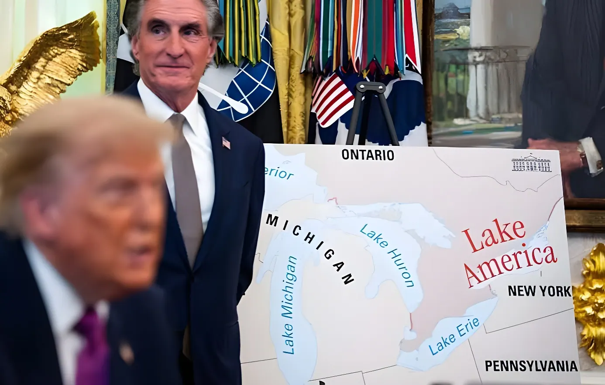

Depuis son retour à la Maison-Blanche en janvier 2025, Donald Trump a fait des noms de lieux un instrument de sa communication politique : renommage du golfe du Mexique, retour du mont McKinley en Alaska, puis, à l'été 2026, rebaptisation du lac Ontario en pleine escalade commerciale avec le Canada. Une série de décrets largement symboliques, mais qui ont déjà provoqué un procès contre l'Associated Press et une brouille ouverte avec Ottawa.
Le jour même de son investiture, le 20 janvier 2025, Donald Trump signe le décret « Restoring Names That Honor American Greatness », qui rebaptise le golfe du Mexique en « golfe d'Amérique » et rétablit le nom de mont McKinley pour le plus haut sommet d'Alaska, jusque-là appelé Denali depuis 2015. Le texte s'appuie sur le Board on Geographic Names, l'organisme du Geological Survey chargé de normaliser les noms de lieux aux États-Unis, et sur le Geographic Names Information System (GNIS), la base fédérale de référence utilisée par la plupart des éditeurs de cartes.
Ce décret ne s'applique juridiquement qu'à l'usage fédéral américain : en dehors des États-Unis, rien n'oblige à employer les nouveaux noms, et le nom de Denali reste notamment revendiqué par les sénateurs d'Alaska et de nombreux Américains autochtones, pour qui la dénomination originelle a une valeur symbolique forte.
« Le golfe du Mexique sera désormais officiellement connu sous le nom de golfe d'Amérique. »
— Décret présidentiel « Restoring Names That Honor American Greatness », 20 janvier 2025Le 11 février 2025, la Maison-Blanche informe l'Associated Press qu'elle sera exclue des espaces réservés au pool de presse — Bureau ovale, Air Force One — tant qu'elle continuera d'utiliser « golfe du Mexique » dans ses dépêches, l'agence ayant choisi de mentionner le nouveau nom tout en conservant l'ancien pour son lectorat international. L'interdiction est rendue indéfinie trois jours plus tard. L'AP saisit la justice le 21 février, invoquant une atteinte au premier amendement.
La Maison-Blanche prévient l'AP qu'elle sera exclue du Bureau ovale si elle n'adopte pas « golfe d'Amérique ».
L'exclusion est rendue indéfinie ; l'AP reste toutefois admise aux points de presse ouverts.
L'agence porte plainte contre trois responsables de la Maison-Blanche pour violation du premier amendement.
Le juge Trevor McFadden ordonne la réintégration de l'AP au nom de la liberté de la presse.
L'AP affirme avoir de nouveau été écartée d'un point de presse, malgré la décision du juge.
Le 27 août 2026, Donald Trump signe un nouveau décret ordonnant aux agences fédérales de désigner le lac Ontario sous le nom de « Lake America ». La mesure intervient alors que les relations commerciales entre Washington et Ottawa se sont fortement dégradées, sur fond de menaces répétées de faire du Canada le « 51e État » américain et de nouveaux droits de douane pouvant atteindre 50 % sur des dizaines de milliards de dollars de marchandises canadiennes.
| Lieu | Ancien nom | Nouveau nom | Date du décret |
|---|---|---|---|
| Golfe du Mexique | Golfe du Mexique | Golfe d'Amérique | 20 janv. 2025 |
| Plus haut sommet d'Alaska | Denali | Mont McKinley | 20 janv. 2025 |
| Lac Ontario | Lac Ontario | Lake America | 27 août 2026 |
« Longtemps après le départ de Trump, ce lac s'appellera toujours lac Ontario. »
— Doug Ford, premier ministre de l'Ontario, 29 août 2026Ces renommages s'accompagnent d'une utilisation répétée de la cartographie à des fins de communication : une carte affichant le « golfe d'Amérique » a été exposée un temps près du Resolute Desk, dans le Bureau ovale, et Donald Trump a plusieurs fois relayé des images représentant le Canada comme partie intégrante du territoire américain, ou comme un futur 51e État. Selon Google, les nouveaux noms ne s'appliquent que sur les versions américaines de ses cartes, dès lors que la base fédérale GNIS les intègre ; à l'étranger, les appellations traditionnelles restent affichées.
Pris isolément, chacun de ces décrets ne change rien à la géographie : le golfe du Mexique reste le golfe du Mexique pour la quasi-totalité du monde, et aucun texte ne peut à lui seul transformer le Canada en État américain. Mais la répétition de ces gestes, du golfe au lac Ontario en passant par la pression exercée sur une agence de presse pour qu'elle adopte le vocabulaire officiel, dessine une méthode : utiliser le langage et la carte comme des leviers de rapport de force, aussi bien à l'intérieur des frontières américaines que dans les tensions avec des partenaires comme le Canada. Reste à savoir si ces symboles, une fois la présidence Trump achevée, survivront mieux que les précédents changements de nom dans l'histoire américaine — à commencer par celui de Denali, qu'il aura fallu quarante ans pour officialiser une première fois.
Since returning to the White House in January 2025, Donald Trump has turned place names into a tool of political messaging: renaming the Gulf of Mexico, restoring Mount McKinley in Alaska, and, in the summer of 2026, renaming Lake Ontario amid an escalating trade fight with Canada. A series of largely symbolic executive orders that have nonetheless triggered a lawsuit from the Associated Press and an open rift with Ottawa.
On the very day of his inauguration, January 20, 2025, Donald Trump signed the executive order "Restoring Names That Honor American Greatness," renaming the Gulf of Mexico as the "Gulf of America" and restoring the name Mount McKinley for Alaska's highest peak, known as Denali since 2015. The order relies on the Board on Geographic Names, the U.S. Geological Survey body that standardizes place names, and on the Geographic Names Information System (GNIS), the federal database used by most mapmakers.
Legally, the order only governs U.S. federal usage: outside the United States, nothing requires the new names to be used, and the name Denali remains championed by Alaska's senators and many Alaska Natives, for whom the original name carries strong symbolic weight.
"The Gulf of Mexico will now officially be known as the Gulf of America."
— Executive Order "Restoring Names That Honor American Greatness," January 20, 2025On February 11, 2025, the White House told the Associated Press it would be barred from press-pool spaces — the Oval Office, Air Force One — unless it adopted "Gulf of America," after the agency chose to note the new name while keeping the older one for its global readership. The ban was made indefinite three days later. The AP sued on February 21, alleging a First Amendment violation.
The White House warns the AP it will be excluded from the Oval Office unless it adopts "Gulf of America."
The ban is made indefinite; the AP remains admitted to open press briefings.
The agency sues three White House officials for violating the First Amendment.
Judge Trevor McFadden orders the AP reinstated in the name of press freedom.
The AP says it was again turned away from a press event, despite the judge's ruling.
On August 27, 2026, Donald Trump signed a new order directing federal agencies to refer to Lake Ontario as "Lake America." The move came as trade relations between Washington and Ottawa had sharply deteriorated, amid repeated threats to make Canada the "51st state" and fresh tariffs of up to 50% on tens of billions of dollars' worth of Canadian goods.
| Place | Former name | New name | Order date |
|---|---|---|---|
| Gulf of Mexico | Gulf of Mexico | Gulf of America | Jan. 20, 2025 |
| Alaska's highest peak | Denali | Mount McKinley | Jan. 20, 2025 |
| Lake Ontario | Lake Ontario | Lake America | Aug. 27, 2026 |
"Long after President Trump is gone, it will still be called Lake Ontario."
— Doug Ford, Premier of Ontario, August 29, 2026These renamings come alongside repeated use of cartography for messaging purposes: a map displaying "Gulf of America" was set up for a time beside the Resolute Desk in the Oval Office, and Trump has repeatedly shared images depicting Canada as part of U.S. territory, or as a future 51st state. According to Google, the new names apply only to U.S. versions of its maps once the federal GNIS database reflects them; abroad, traditional names remain displayed.
Taken individually, none of these orders changes geography itself: the Gulf of Mexico remains the Gulf of Mexico for most of the world, and no single decree can turn Canada into a U.S. state. But the repetition of these gestures — from the Gulf to Lake Ontario, alongside the pressure put on a news agency to adopt official vocabulary — outlines a method: using language and maps as leverage, both within U.S. borders and in tensions with partners like Canada. Whether these symbols outlast the Trump presidency better than past American name changes remains to be seen — starting with Denali, which took forty years to become official the first time around.